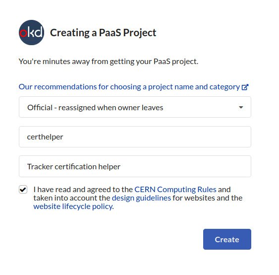

Deployment Guide
The following steps will guide you through the deployment procedure of the app on OpenShift. An overview of the steps is:
- Create a new PaaS project
- Setup the base image & the repository that will be used
- Setup a Database
- Setup Environmental Variables
- Setup a Django superuser
- Mount EOS Storage
- Single Sign-On
- Deploy
- Expose the app
The procedure can be done completely via the web UI provided by PaaS.
Prerequisites
.s2i directory inside the root of your repository
We will be using the Software To Image (s2i) approach to deploy on PaaS, namely the Python flavor. This means that a Docker image is created from our repository on each deployment.
There should be a .s2i directory inside your repository, with the environment file in it.
environment contents
These are environmental variables used by Openshift when creating the
Docker image. The value of APP_SCRIPT will be the entrypoint of the created image.
It should point to openshift-start-up-script.sh.
Requesting a website
Create a new PaaS project by clicking here. Then, fill out the fields as shown below:

When creating a website, different site types can be chosen. In
order to use the OpenShift software, the PaaS Web Application option
has to be selected.
Setup Procedure
Once the website is successfully requested, the (new, empty) project should be available in OpenShift.
Create the base image
MLPlayground needs ROOT in order to read data from .root files.
To do so, a ROOT installation is needed in the base image that we're
going to build MLPlayground in. Usually, we use python3.8-ubi8, but
after lots of failed experimenting with
pre-built ROOT packages, it
appears that it's "simpler" to build it from source.
For this reason, we are using a python3.8-ubi8 image as base, on top
of which we use a Dockerfile which:
- Installs all
ROOTdependencies, - Builds
ROOTfrom source.
Note
These instructions are adapted from the tutorial here.
-
Open PaaS and select your project. There should be no resources there:
-
Click on the "+" sign, on the top-right:
-
Add the following in the YAML editor that appears:
And clickapiVersion: image.openshift.io/v1 kind: ImageStream metadata: name: python-with-rootCreate. The new base image we will be creating will be calledpython-with-root, as specified in the YAML above. -
Click the "+" sign again, to create a new YAML.
-
Paste the following contents in the new editor:
This YAML specifies that we are usingapiVersion: build.openshift.io/v1 kind: BuildConfig metadata: name: python-with-root spec: resources: limits: cpu: '2' memory: 4Gi requests: cpu: '2' memory: 4Gi output: to: kind: ImageStreamTag name: python-with-root:latest strategy: dockerStrategy: from: kind: ImageStreamTag name: python:3.8-ubi8 namespace: openshift type: Docker source: type: Git git: uri: 'https://github.com/CMSTrackerDPG/MLplayground.git' triggers: - type: GitHub github: secret: <??> - type: Generic generic: secret: <??> - type: ConfigChange - type: ImageChange imageChange: {}python:3.8-ubi8as the base image, with the extra steps configured in thesourceparameter. The result will be stored under the namepython-with-root:latest. Note that we are using the customDockerfilefound here, as specified undersource-->git. ThisDockerfilebuilds a Python image withROOTinstalled. -
Go to
Buildsand click thepython-with-rootBuildConfig. - Under the
Environmenttab, add aROOT_TAG_NAMEvariable, with the valuev6-24-08. This is theROOTversion to be installed:
v6-24-08seems to work with thepython3.8image. -
Under
Actions, on the top-right, clickStart build:
-
After several hours, the build of the base image should be complete.
Create the s2i build
Now, once we have created the base image and it has finished building, we are ready to deploy our application on top of the base image.
Note
Adapted from here.
The following steps need to be done in order to configure the web application with the GitHub repository:
- Go to PaaS.
-
Select the project you created

-
Click on "Add" on the left

-
choose
Git Repository
-
Paste the repository URL in the field provided.
- Under
Advanced Git options, you may select a specific branch, if needed. E.g. for the development mlplayground instance, thedevelopbranch must be selected. -
Under
Advanced Git options, you will be warned thatMultiple import strategies detected. Click onEdit Import Strategyand selectBuilder Image. Next, selectPython, and the properBuilder Image version:
Info
As of writing, we select
3.8-ubi8. -
Under General, change the Application name and Name appropriately.
-
Under Resources, select Deployment

-
[Optional] Add GitHub credentials at "Source Secret" if the repository is private
-
Make sure that Create a route to the Application is ticked.
- Under Show advanced Routing options:
a. Paste the Hostname you want (will be automatically registered),
b. Make sure Secure Route is ticked,
c. Under TLS termination, select
Edge, d. Under Insecure Traffic, selectRedirect. -
Click on Create. The application has been configured!
Note
Under Topology, you will see your project trying to run for the first time. This will fail, since most environmental variables are missing. Click on the main app:

You should be getting the following error:

-
We now also need to change the base image used to build our app. Go to
Builds, select theBuildConfigyou just created (e.g.mlplayground-develop), and click theYAMLtab. Navigate tospec>strategy>sourceStrategy>fromand change thenamespaceto the name of the project you created (e.g.ml4dqm-playground-dev) and thenametopython-with-root:latest, wherepython-with-rootis the base image you created in the previous section.Warning
The base image must have finished building before you can build your application.
Setup a Database
The database was requested from the CERN DB on demand service. To request one, follow the instructions here.
A PostgreSQL database is used.
After the database has been requested it can be used straight away. Django takes care of creating the necessary tables and only requires the credentials.
Actions to take once the database is ready
Warning
This is only needed if you just requested a new Database instance from the DBoD website.
Change default password
Given the username that was sent to you via the DBoD Service,
(possibly admin) connect to the database:
psql -h dbod-birdup.cern.ch -U admin -p 6601
And run:
ALTER ROLE admin WITH PASSWORD 'new_password';
SSL Configuration
Error
django.db.utils.OperationalError: connection to server at
"<host>" (<ip>), port 6601 failed: FATAL: no pg_hba.conf entry for host "<ip>"
Follow the instructions here to edit the required configuration files using the file editor.
Create the database
Assuming that the database name
you are going to use is certhelperdb
(i.e. DJANGO_DATABASE_NAME is certhelperdb), you will need to
create it manually first.
To do so, you will have to first connect to it using psql1:
psql -h <Database hostname> -p <Database port> -U <Database user>
Then, in the SQL prompt, run the following to create the database:
CREATE DATABASE certhelperdb;
and enter your password once prompted.
Setup Environmental Variables
This procedure takes place on PaaS, via the Developer view.
- Under
Secrets, clickCreate>Key/value secret:Secret name:postgres-userKey:userValue: Your PostgreSQL database's username.- Click
Add key/value. Key:passwordValue: Your PostgreSQL database's password.- Click
Create.
- Under
Secrets, clickCreate>Key/value secret:Secret name:cern-sso-login-registration-credentialsKey:CERN_SSO_REGISTRATION_CLIENT_IDValue: Your SSO registration'sClient ID.- Click
Add key/value. Key:CERN_SSO_REGISTRATION_CLIENT_SECRETValue: Your SSO registration'sClient Secret.- Click
Create.
-
Under
Builds --> Your project name --> Environmentuse theAdd from ConfigMap or Secretbutton to add the variables:DJANGO_DATABASE_USER <postgres-user/user> DJANGO_DATABASE_PASSWORD <postgres-user/password> CERN_SSO_REGISTRATION_CLIENT_ID <cern-sso-login-registration-credentials/CERN_SSO_REGISTRATION_CLIENT_ID> CERN_SSO_REGISTRATION_CLIENT_SECRET <cern-sso-login-registration-credentials/CERN_SSO_REGISTRATION_CLIENT_SECRET> -
Non-secret variables:
DJANGO_SECRET_KEY: Generate a django secret key.DJANGO_ALLOWED_HOSTS: The app's URL without "https://", e.gml4dqm-playground-develop.web.cern.ch.DJANGO_DATABASE_ENGINE:django.db.backends.postgresqlDJANGO_DATABASE_NAME: The name of the database that is going to be used in your PostgreSQL instance. Note: You will have to create the database yourself, viapsqlorpgadmin.DJANGO_DATABASE_HOST:dbod-mlplaygrounddb.cern.chDJANGO_DATABASE_PORT: The port that the DBoD service gave to you.DIR_PATH_DQMIO_STORAGE: The colon-separated paths pointing to the directories that are going to be searched for DQM files.DJANGO_DEBUG:False, orTrueif you need to temporarily do some testing.CSRF_TRUSTED_ORIGINS: Your full app's URL with "https://", e.g.https://ml4dqm-playground-develop.web.cern.ch.SITE_ID: Empty, until Single Sign-On is configured.
-
Save the variables and rebuild the project:

Note
The procedure above should only be followed once. Once the app is fully configured, you should not have to alter anything, unless a change occurs (e.g. Database host/password).
Note
More information on the environmental variables can be found here.
Mount EOS Storage
The project has 1 TB of storage associated in the EOS. To mount it to OpenShift follow these instructions.
Detailed instructions can be found on the PaaS docs.
Create a superuser
Open a terminal in the running pod
-
Go to PaaS and, in the
Developerview, clickTopology:
-
Click on the application shown there:
-
On the right, in the
Podssection, clickView logs: -
Click the
Terminaltab:
-
Run
source root/bin/thisroot.sh. This is needed toimport ROOTinpythonlater.
Run the Django management command
In the terminal you opened in the previous section, run python manage.py createsuperuser to create the superuser.
You will be asked for a username, a password and an e-mail (the latter is optional).
Single Sign-On
CERN Setup
- Visit the application portal.
- Create a new application, giving it a meaningful
Application identifier(e.g.ml4dqm-playground). - Under the
SSO Registrationtab, create a new one:- Under
Redirect URI(s)addhttps://ml4dqm-playground.web.cern.ch/accounts/cern/login/callback/. - Under
Base URLaddhttps://ml4dqm-playground.web.cern.ch/
- Under
- Click
Submitand note theClient IDandClient Secretthat have been generated.
Note
Do not use the Identifier which is automatically generated by
PaaS (found in the application portal and looks like webframeworks-paas-*).
It is not meant to be used for the SSO registration of the application,
so you will need to generate a new one.
Integration
The single sign-on integration is very easy when using the
django-allauth python package, which has built-in CERN support.
Note
Based on the installation procedure here.
- If you have not yet created a Django
superuserfor your database yet, create one. - Log into the
adminsite of your application using thesuperuseraccount. - On the left, go to
Sitesand add a new entry, using the full URL of your app:
- Then, go to
Social applicationsand add a new entry, selectingCERNas aProviderand using theclient_idyou noted in the previous section: - Verify the
SITE_IDvalue by checking the database itself. E.g. it might ge1or2. To do that, you will first have to open a terminal on a running pod. Runpython manage.py shell. In the prompt that appears, run the following:The number printed on the terminal is yourfrom django.contrib.sites.models import Site print(Site.objects.all()[0].id)SITE_ID. Use it to update the environmental variable - Make sure you have set the following environment variables in your Build environment on PaaS:
CERN_SSO_REGISTRATION_CLIENT_IDCERN_SSO_REGISTRATION_CLIENT_SECRET
Deploying a new build
If you want to rebuild the deployment, you can do so manually by triggering a build on PaaS.
This can be done by visiting
paas.cern.ch, selecting the Developer view, selecting the
project and then visiting Builds. Click the three dots on the right
of your BuildConfig and press the build button. The new deployment process should be
started. In the meantime, the logs of the build process can be viewed by
clicking on View Log.
Exposing the app
See the PaaS docs on how to make the app visible from outside the CERN GPN.
-
You will either have to do that through LXPLUS, or your computer must be inside CERN. You can always use an SSH tunnel for that. ↩